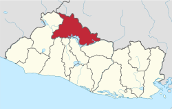
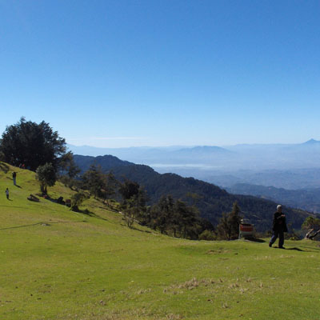
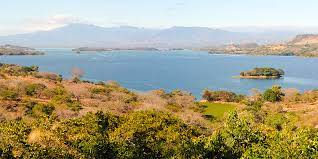
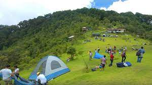

Datos históricos importantes
El nombre Chalatenango es de origen náhuatl, y proviene del chal, sal, arena; at, agua, río;
y Tenango, valle. Su etimología es, por lo tanto, valle de aguas arenas.Esta población fue
fundada
en tiempos de la época precolombina por tribus lencas, pero a fines del siglo XV fue
sometida por los
pipiles.
Lista de los municipios
- Chalatenango
- Agua Caliente
- Arcatao
- Azacualpa
- Citalá
- Comalapa
- Concepción Quezaltepeque
- Dulce Nombre de María
- El Carrizal
- El Paraíso
- La Laguna
- La Palma
- La Reina
- Las Vueltas
- Nombre de Jesús
- Nueva Concepción
- Nueva Trinidad
- Ojos de Agua
- Potonico
- San Antonio de La Cruz
- San Antonio Los Ranchos
- San Fernando
- San Francisco Lempa
- San Francisco Morazán
- San Ignacio
- San Isidro Labrador
- San José Cancasque
- San José Las Flores
- San Luis del Carmen
- San Miguel de Mercedes
- San Rafael
- Santa Rita
- Tejutla
Centros turísticos importantes
- El pital
- Lago Suchitlán
- Miramundo
- La Palma
- San Ignacio

Lagos
- Lago Suchitlán

Ríos
- Rio Sumpul
- Río Chiquito
- Rio Lempa
Volcanes o cerros
- Fraternidad
- Cerron Grande
- El Pital
- Miramundo

Personajes célebres
- Carlos Fajardo
- Miguel P. Peña
- Otmaro Alvarenga
- Luciano Mariano